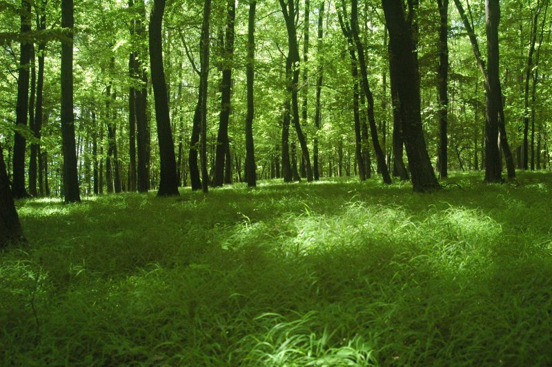
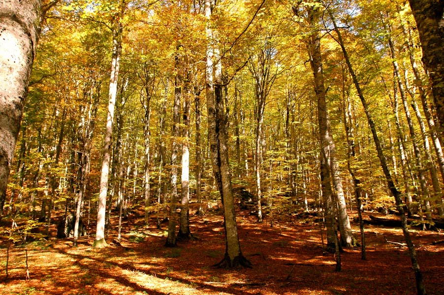

LISTOPADNE SUME
Kao i u svim ostalim šumama, biocenoza lišćarskih listopadnih šuma je uređena po spratovima.
Sprat drveća gradi jedna do nekoliko vrsta visokog drveća , naprimer. beli grab, sladun, cer, bukva, lužnja, kitnjak, javor.
Od životinja u ovom spratu nalaze se brojne ptice, insekti i arborealni sisari naprimer veverica. Sprat žbunova grade niske drvenaste
biljke u formi nanofanerofita i hemefita, a od životinja najčešće su sitne ptice slavuj, senica, carić,insekti, pauci i puževi.
Prizemni sprat grade zeljaste biljke (mahovine, paprati,šumska jagoda), plodonosna tela gljiva (vrganj, muhara), i po koji lišaj.
Listopadne šume se javljaju na područjima gde je zastupljena umereno kontinentalna klima sa umereno toplim letima i umereno hladnim zimama.
Ove šume se nazivaju lišćarsko listopadne zbog njihove karakteristike da tokom jeseni počnu da odbacuju svoje listove da bi preživeli zimu, posle
zime koja traje nekoliko meseci drveće u ovim šumama ponovo dobija lišće.
Listopadne šume se dele na sitnolisne listopadne šume , krupnolisne hrastove šume , listopadne bukove šume i poplavne nizijske šume.
Životinje koje se najčešće mogu naći u ovim šumama su : lisice , srne , divlje svinje , medvedi , zečevi i mnogobrojne vrste ptica, glodara i insekata.
Ljudi uništavaju listopadne šume zbog svoijh interesa koji su štetni po ekosisteme. Najveći problem je nepoštovanje zakona , ljudi svesno uništavaju ove šume nezakonitom sečom i zagađujući ih.

